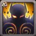
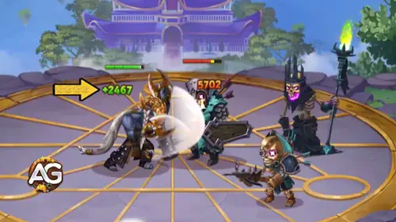
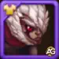
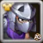

Have you ever imagined fighting your own inner demon while leading your team to victory? Ishmael’s tale in Hero Wars: Dominion Era is both tragic and inspiring. Once forced to kill his own father to prevent a dark sacrifice, he now carries the shadow of that battle within himself. This makes him one of the most fascinating warriors in the game.
In this guide, we’ll dive into Ishmael’s abilities, stats, strengths, and the best ways to maximize his potential in battle. Whether you are a beginner or a seasoned player, understanding how to build and support Ishmael can make the difference between victory and defeat.
Ishmael Guide - Hero Wars: Dominion Era, a game developed by Nexters.
Who Is Ishmael?
Ishmael is a front-line warrior fueled by agility and resilience. His unique background of tragedy and inner conflict makes him not only a powerful hero in battle but also one of the most emotionally compelling characters in Hero Wars: Dominion Era.
Class: Warrior
Position: Front Line
Main Stat: Agility
With high survivability, Ishmael heals himself while dealing damage, making him an enduring threat in prolonged battles. His strength grows even further when paired with allies who boost damage and critical hit chance, such as Jet, Nebula, Sebastian, and Fafnir.
Mastering Ishmael means mastering balance: unleashing his high damage potential while ensuring he has the right support to dominate the battlefield.
Ishmael Pros and Cons - Hero Wars: Web and Facebook
✅ Pros
High Damage Output: Ishmael’s critical hits and attack speed in demonic form allow him to shred enemies quickly.
Sustain through Vampirism: He restores health while dealing damage, giving him great survivability in long fights.
Frontline Warrior: Can function both as a damage dealer and semi-bruiser thanks to his lifesteal and agility scaling.
Synergy with Buffers: Works exceptionally well with heroes who boost crit chance and physical attack, like Sebastian, Nebula, and Jet.
Ascension Power Spike: Brutal Awakening makes his crits deal 4x damage, turning him into a true late-game carry.
❌ Cons
Reliant on Critical Hits: His main damage depends on crits, making him vulnerable to anti-crit counters like Helios and Amira.
Weak to Pure Damage: Enemies such as Arachne and Phobos bypass his dodge and defenses, quickly draining his health.
Needs Team Support: Without heroes who boost his stats or protect him, Ishmael struggles to reach his full potential.
Energy Drain in Demonic Form: His ultimate form is temporary and ends when energy runs out, limiting sustained burst.
Control Vulnerability: Stuns, charms, and blinds (like from Lian and Mara) can completely shut him down mid-fight.
Ishmael Skills Upgrade Priority - Hero Wars: Dominion Era
Learn which of Ishmael’s skills matter most, explained in simple terms with clear reasoning for every upgrade priority.

Awakening
Ishmael transforms into his demonic form, gaining a huge boost to attack speed and critical hit chance. This is the skill that makes Ishmael deadly, because the faster he attacks and the more criticals he lands, the more health he restores through vampirism. The downside is that he slowly loses energy, and when it reaches zero, the form ends.
Evolution Priority:Very High – This is Ishmael’s core skill. Without it, he is much weaker. Always max this first to make him a true carry.
Skill - Awakening, Hero Wars Dominion Era.
Ascension skill: Brutal Awakening – Critical hits deal x4 damage instead of x2 when in demonic form. This makes Ishmael’s late game power skyrocket, turning him into one of the strongest damage dealers if well supported.
Phantom
Ishmael becomes much harder to hit, dodging physical attacks for a short time. Each dodge gives him extra power, helping him stay alive and deal more damage. However, if the enemy’s level is much higher, the dodge chance is reduced.
Formula: (Dodge chance depends on Ishmael’s level vs. target level).
Evolution Priority:High – Survivability is key. This skill keeps Ishmael alive long enough to unleash his damage. Upgrade after Awakening.
Skill - Phantom, Hero Wars Dominion Era.
Ascension skill: Elusive Phantom – Lets Ishmael dodge not just physical, but also magical attacks. This makes him much stronger against mages and balanced teams, greatly boosting his survivability.
Dark Craft
This passive skill increases Ishmael’s vampirism, meaning he heals himself every time he deals damage. The stronger his criticals, the more health he recovers. This works perfectly with Awakening and makes him very hard to kill if he keeps attacking.
Evolution Priority:Medium High – A good skill to invest in, but only after Awakening and Phantom are well-leveled. It helps Ishmael survive longer battles.

Skill - Dark Craft, Hero Wars Dominion Era.
Storm Blades
Every third hit Ishmael lands stuns his opponent for one second. This can be useful to disrupt enemies, but since the stun chance decreases against higher-level enemies, it is more reliable in late game.
Formula: (Stun chance depends on Ishmael’s level vs. target level).
Evolution Priority:Low – While the stun can help, it is not as important as his other skills. Upgrade this last, after all other abilities are strong.
Skill - Storm Blades, Hero Wars Dominion Era.
Best Patronage for Ishmael
Choosing the right pet for Ishmael greatly boosts his damage and survivability. Here are the best options ranked from strongest to weakest.
Fenris is the best patronage for Ishmael because it directly increases his Physical Attack and Armor Penetration, two stats that boost his critical hit damage and allow him to shred enemy defenses. The blind effect from Fenris’s patronage skill makes Ishmael’s basic attacks even more dangerous, disrupting opponents while he heals from vampirism. This synergy makes Fenris the strongest choice overall.
Mara is situational but still very powerful. Her patronage skill extends the duration of Ishmael’s Storm Blades stuns and any control effects his allies apply. While she doesn’t boost physical stats, the extended control time can help Ishmael keep enemies locked down longer, giving him more chances to land critical strikes. A good secondary option if you want more crowd control.
Oliver offers health and armor bonuses, plus an emergency self-heal when Ishmael’s HP drops below 50%. This makes Ishmael much harder to kill early on, especially in long fights. However, Oliver doesn’t boost his damage directly, which is why he is ranked below Fenris and Mara. Still, he’s a solid choice if your priority is survival rather than raw damage.
Best Skin for Ishmael Hero Wars: Dominion Era
Find out which Ishmael skins are worth upgrading first. Learn the best skin order based on battle impact, survivability, and damage potential.
Default Skin
Stats gain: Agility: +1,365
- Physical attack from Agility: +4,095
- Armor from Agility: +1,365
Each agility point grants: two points to physical attack; one point to armor; one extra point to physical attack if agility is the main stat of a hero.
Evolution Priority:Very High – Boosting Ishmael’s main stat increases both his damage and survivability. Always upgrade this skin first.
Total of Agility Skin Stone for max level:
30,825
Romantic Skin
Stats gain: Critical Hit Chance: +2,960
Evolution Priority:High – Critical hits are the core of Ishmael’s damage output, especially when combined with Awakening and Brutal Awakening ascension. This skin makes him far deadlier.
Total of Agility Skin Stone for max level:
55,410
Champion Skin
Stats gain: Physical Attack: +7,117
Evolution Priority:Medium High – Directly boosts Ishmael’s raw damage. Strong, but slightly less impactful than the Agility and Critical Chance skins.
Total of Agility Skin Stone for max level:
55,410
Solar Skin
Stats gain: Armor Penetration: +10,650
Evolution Priority:Medium – Helps Ishmael punch through tank defenses. Good when facing armored frontlines, but less useful against magic-heavy teams.
Total of Agility Skin Stone for max level:
55,410
Spring Skin
Stats gain: Physical Attack: +7,095
Evolution Priority:Medium – Adds more physical attack but is not as essential as the Champion or Romantic skins. Nice extra damage but not a priority.
Total of Agility Skin Stone for max level:
55,410

Masquerade Skin
Stats gain: Health: +106,645
Evolution Priority:Low – Provides survivability, but Ishmael relies more on vampirism and damage. This skin is situational and the last one to upgrade.
Total of Agility Skin Stone for max level:
55,410

Shredder Skin
Stats gain: None (Visual Only)
Evolution Priority:Very Low – This skin is purely cosmetic and has no effect on Ishmael’s stats or gameplay.
Total of Agility Skin Stone for max level: N/A (visual skin)
Note: This skin can only be obtained during a special event using an Event Ticket.
Ishmael Artifact Evolution Priority Hero Wars: Dominion Era
Understanding which artifacts to prioritize for Ishmael ensures maximum damage and survivability. Here’s the best order to evolve them based on battle impact.
Weapon Artifact: Hidden Demon’s Katars
Stats gain: Critical Hit Chance: +13,941
Evolution Priority:Very High – This artifact activates with Ishmael’s ultimate skill, boosting critical hit chance for the whole team. Since Ishmael’s main strength is dealing devastating critical hits, this artifact is essential and should always be prioritized first.
Evolution Priority:High – Increases Ishmael’s ability to bypass enemy armor and boosts his raw damage. This synergizes perfectly with his fast critical strikes, making him more effective against tanky opponents. Upgrade after his weapon artifact.
Ring Artifact: Ring of Agility
Stats gain: Agility: +6,249
- Physical attack from Agility: +18,747
- Armor from Agility: +6,249
Each agility point grants: two points to physical attack; one point to armor; one extra point to physical attack if agility is the main stat of a hero.
Evolution Priority:Medium High – This artifact boosts Ishmael’s main stat, giving both offense and defense. While useful, it doesn’t provide as much team-wide advantage as his weapon or book, so it’s evolved third.
Ishmael Glyph Evolution Priority
Optimizing Ishmael’s glyphs maximizes his critical strike potential and survivability. Here’s the priority order with reasons based on battle performance.
1st Glyph - Physical Attack:
Stats gain: Physical Attack: +4,340
Evolution Priority:Very High – Ishmael relies on raw physical damage to trigger massive critical hits. Increasing physical attack directly scales his DPS, making this the top glyph to evolve first.
2nd Glyph - Health:
Stats gain: Health: +62,200
Evolution Priority:High – While Ishmael excels in offense, he can be fragile. Extra health significantly boosts his survivability, allowing him to stay alive long enough to unleash critical strikes. Prioritize after Physical Attack.
3rd Glyph - Armor Penetration:
Stats gain: Armor Penetration: +6,500
Evolution Priority:High – This ensures Ishmael’s attacks can cut through tank defenses, making him lethal even against armored teams. A strong offensive stat, upgraded right after Health for balance.
4th Glyph - Critical Hit Chance:
Stats gain: Critical Hit Chance: +1,995
Evolution Priority:Medium – Critical hits are central to Ishmael’s damage output, but his kit and artifacts already provide strong crit boosts. This glyph is still important but not as urgent as Physical Attack or Armor Penetration.
5th Glyph - Agility:
Stats gain: Agility: +1,135
- Physical attack from Agility: +3,405
- Armor from Agility: +1,135
Each agility point grants: two points to physical attack; one point to armor; one extra point to physical attack if agility is the main stat of a hero.
Evolution Priority:Medium-Low – Agility provides both damage and armor, but the gains are smaller compared to direct Physical Attack or Armor Penetration. Useful for balance, but should be evolved last.
How to Counter Ishmael in Hero Wars: Dominion Era
Ishmael is a high damage warrior who relies on critical hits, vampirism, and dodge to stay alive. To defeat him, focus on heroes who punish crits, deal pure damage, or disable him before he snowballs.
Why she defeats Ishmael: Amira targets Agility-based heroes like Ishmael. Her wish spell turns all of his critical hits into automatic misses for several seconds, completely shutting down his main source of damage.
Arachne
Why she defeats Ishmael: Arachne’s Demolition Robot and Minefield deal pure damage and apply stuns. Since Ishmael cannot dodge pure damage, he quickly loses health despite his vampirism, while the stun interrupts his attacks.
Helios
Why he defeats Ishmael: Helios punishes critical hits with Flaming Retribution. Since Ishmael relies heavily on crits during his demonic form, Helios reflects massive magic damage back at him, making Ishmael self-destruct.
Lian
Why she defeats Ishmael: Lian charms attackers who damage her, forcing Ishmael to stop attacking and turn against his own team. She also deals pure damage with her charm ability, which bypasses his defenses.
Phobos
Why he defeats Ishmael: Phobos targets the closest enemy, which is usually Ishmael, reducing his physical attack and dealing pure damage at the same time. This weakens Ishmael’s burst damage while cutting into his survivability.
Ishmael Best War Flag Hero Wars
Maximize Ishmael’s damage and survivability in the front line with War Flags that enhance attack, cooldown, and weaken enemies in battle.
War Flag of Swift Warriors:
.
Ishmael and Team Benefit: Speeds up skill cooldown for Warriors by 5%, allowing Ishmael to use his high-damage abilities more frequently and stay at peak DPS in the frontline.
War Flag of Decline:
.
Ishmael and Team Benefit: Reduces enemy healing by 10%, making it easier for Ishmael to finish off enemies quickly despite their sustain abilities.
War Flag of Frost:
.
Ishmael and Team Benefit: Reduces enemy skill levels by 2 every 18 seconds. This directly hinders enemy damage and disables powerful abilities, keeping Ishmael safer in the frontline while he deals damage.
Conclusion
Ishmael is a formidable frontline warrior in Hero Wars: Dominion Era, capable of dealing massive critical damage while sustaining himself through vampirism. His strength shines when paired with heroes that boost critical hits and physical attack, as well as War Flags and artifacts that enhance his damage output and survivability. However, he is vulnerable to pure damage, crowd control, and anti-crit abilities, so team composition and positioning are key. By prioritizing the right skills, artifacts, glyphs, skins, and War Flags, players can maximize Ishmael’s potential and dominate both PvP and PvE battles.
About the Author
Alexandre Domingos holds a postgraduate degree in Engineering and works as a Production Supervisor. In his spare time, he explores the gaming world as a YouTuber and blogger at Alexandre Games, combining his passion for technology and strategy. He has been immersed in gaming since the age of 5, starting on classic platforms like MSX, Master System, Nintendo, and even an old 286 PC. Since 2019, Alexandre has also been playing Hero Wars and Mobile Legends, among other mobile games, creating guides, tutorials, and analyses for the community.
Did you like our Ishmael Guide for Hero Wars Web and Facebook? Is there something you didn't understand or would like to suggest changes to? We invite you to join our comment section on the Alexandre Games Blog page. Feel free to express your opinion, clarify your doubts, and share your suggestions. Click the button below to get started:


 30,825
30,825